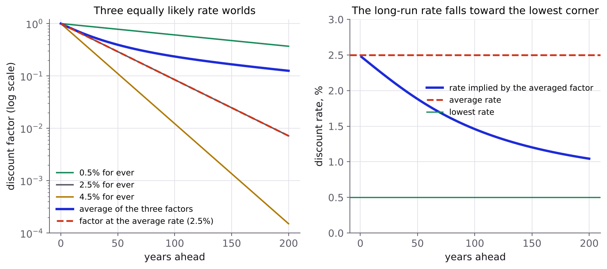
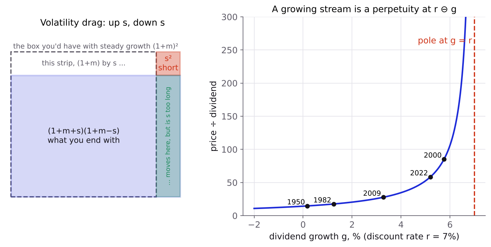
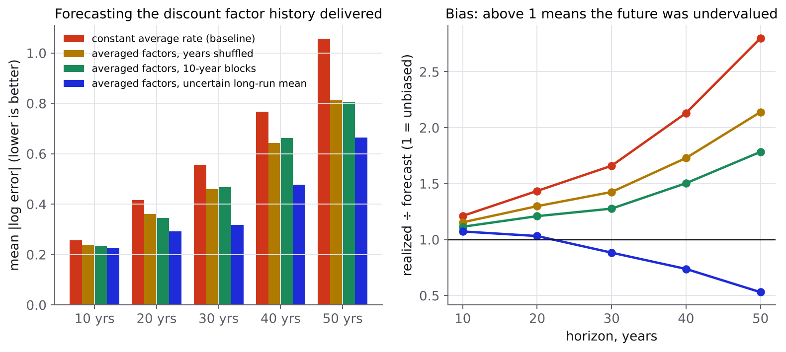
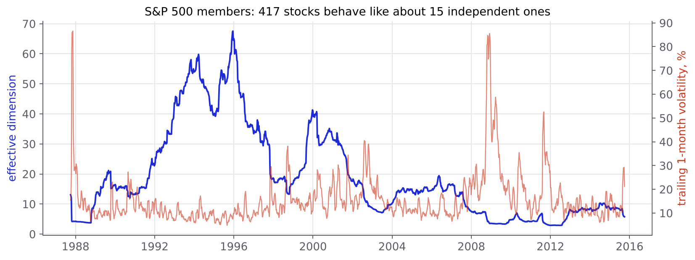

Finance already compounds everything by the circle operation ∘₁ (called mult-add before 1.0), so on forecasting the algebra mostly restates what's known. One idea from it does real work: average the cube's corners (discount factors), not the rates.
On 150 years of US interest and inflation data, averaging discount factors cut the error of 20 to 50 year discount forecasts by 14 to 43% against the standard constant-rate method. It also says that a harm 100 years away, like climate damage, is undervalued by 1.7× to 5× when you discount at one average rate. Weitzman found this in 1998, and the UK Treasury uses it. The other two ideas, systemic risk as lost dimension and growth of growth (the next rung), did not beat their baselines.
Research only, not investment advice. Every number below was checked in Python on Shiller's S&P and Treasury data (1871 to 2022) and daily prices of Dow and S&P 500 stocks (1962 to 2015).

| Idea | Market failure it targets | Test on real data | Against the baseline | Known since |
|---|---|---|---|---|
| Average the corners | Long-run harms discounted away; no market for 100-year promises | Forecast the discount factor history actually delivered, 10 to 50 years out | Beats a constant average rate at every horizon: 50-year log error 1.06 → 0.66 to 0.81 | Weitzman 1998; Newell and Pizer 2003; Arrow et al. 2013 |
| Lost dimension | Systemic risk: correlation nobody prices | Does a drop in effective dimension forecast next month's volatility or a 10% fall? | Barely: 1.4% better on S&P 500 volatility, nothing on the Dow, worse at calling falls | Participation ratio; Kritzman's absorption ratio 2011; Moody's diversity score |
| Growth of growth | Bubbles from reflexive feedback | Does acceleration of price, or a fitted pole, forecast 3-year returns or the peak? | No: out-of-sample R² below zero; pole dates scatter from 6 months to 30 years off | Sornette's log-periodic models, 1990s on |
| Identities | Errors from adding rates that should compound | Fisher, return cubes, volatility drag, Gordon growth | Exact restatements, no forecasting gain; useful for teaching and for spotting mistakes | Classical |
Real rates. The real rate is nominal ⊖ inflation, where a ⊖ b = (a − b)/(1 + b). The usual shortcut, nominal minus inflation, was off by 2 points in 1918 and 3.7 points in the deflation of 1877. At 100% inflation a 10% real return needs 120% nominal, not 110%.
Thirty years of the S&P as a 30-cube. From 1993 to 2022 real wealth grew 7.47×. Adding the 30 yearly returns (layer 1) explains only 39% of that growth. The other 61% sits in the higher layers: return on return.
Volatility drag is a square. Up s, then down s, around a mean m: (1+m+s)(1+m−s) = (1+m)² − s². Since 1871 the S&P's arithmetic mean real return is 8.15% and its circle-operation mean 6.68%. The 1.47-point gap is the cut-out square.
Gordon growth is a perpetuity at r ⊖ g. A dividend growing at g, discounted at r, is worth exactly D/(r ⊖ g). The price has a pole at g = r. The dividend yield measures r ⊖ g directly: 6.8% in 1950, 1.2% in 2000, 1.7% at the end of 2022, so stocks sat far closer to the pole in 2000 and 2022 than in 1950.

Each possible future of interest rates is one path through the cube, and its discount factor is the product of its corners. The fair value of a far-off harm is the average of those factors. Discounting at one average rate instead takes the factor of the average path. Because 1/(1+r)ⁿ curves upward, the average of the factors is always at least the factor of the average (proved in Lean below), and the gap grows with the horizon until the lowest-rate world sets the rate.
That is a market failure with a fix. Markets don't trade 100-year promises, so nobody sees this price. Projects and policies get discounted at today's average rate, and harms like climate damage, soil loss or deferred maintenance shrink to nearly nothing on paper.
The real rate each year is the 10-year Treasury yield ⊖ that year's inflation (mean 2.45%, negative in 21% of years). From every starting year from 1901 on, using only earlier data, each method forecasts the discount factor that rolling the real rate forward actually delivered.

| Horizon | Constant average rate | Averaged, 10-year blocks | Averaged, uncertain mean | Best gain |
|---|---|---|---|---|
| 10 years | 0.257 | 0.235 | 0.225 | −12% |
| 20 years | 0.416 | 0.345 | 0.291 | −30% |
| 30 years | 0.556 | 0.467 | 0.318 | −43% |
| 40 years | 0.768 | 0.661 | 0.478 | −38% |
| 50 years | 1.057 | 0.805 | 0.664 | −37% |
Mean absolute log error of the forecast discount factor (lower is better). "10-year blocks" resamples history in decade-long runs. "Uncertain mean" also treats the long-run average rate as unknown, drawn from its own error band.
How far to trust it. The windows overlap, so 50-year results rest on about two independent half-centuries, and the 1940s and 1970s (negative real rates) drive much of the gap. The direction is solid at every horizon and in every variant; the size is not. How much to lower the rate depends on how persistent rate uncertainty is: the blocks method under-corrects, the uncertain-mean method over-corrects past 30 years, and the truth sits between them.
What it implies. With the uncertain-mean model on the full record, the certainty-equivalent rate falls from 2.3% for one year to 1.8% at 10 years, 1.3% at 50 and 0.8% at 100. A $1 million harm in 100 years is worth about $89,000 today at the constant 2.45% rate, and $155,000 to $468,000 with averaged factors (10-year blocks give the low end, the uncertain mean the high end). Beyond about 150 years the answer depends only on how low the lowest plausible long-run rate is: the lowest corner wins.
Precedent. This is not new policy. The UK Treasury's Green Book has used a falling schedule since 2003: 3.5% for the first 30 years, stepping down to 1% after 300. What the circle operation adds is the picture: averaging corners, with the lowest corner taking over.
Independent risks make a true n-cube: their generating functions combine by the circle operation, and the cube has n independent axes. Correlation leans the cube onto its diagonal. The effective dimension, (Σλ)²/Σλ² over the correlation matrix's eigenvalues, counts the axes left. Each bank or fund that piles into the same exposures removes axes for everyone and pays nothing for it, which is why systemic risk is an externality.
The picture is striking. About 417 S&P 500 stocks behave like 15 independent ones (4% of the axes). The Dow stocks behave like about 6. Dimension collapsed to about 3 in 2008 to 2009 and again after the 2011 euro scare.
The forecast is weak. Adding dimension to the standard volatility model (HAR: last day, week and month) improved next-month volatility forecasts by 1.4% out of sample on the S&P 500, and made them 0.4% worse on the Dow. For calling a 10% fall within three months it made things slightly worse (S&P AUC 0.657 → 0.652; Dow 0.633 → 0.604). Dimension mostly moves with volatility, so it adds little the volatility model doesn't already know.
Caveat: the stock lists are 2015 survivors, which flatters the early years.

Compounding is rung 3: a steady rate and no pole. If the rate itself rises with the level, as in a bubble where rising prices pull in buyers, the path becomes hyperbolic and hits a pole at a finite time, P ~ (tc − t)−1/ε. The order of the pole is again a dimension, which is where your infinity test meets reflexive feedback.
I tested it two ways on the S&P since 1885. Acceleration of the real log price over the past five years did not forecast the next three years' real return (out-of-sample R² −0.017; Shiller's CAPE, the standard baseline, scored −0.012, and the two together −0.073). Fitting a pole to five-year run-ups gave 1931 for the 1929 peak, early 1988 for August 1987 and early 2023 for January 2022, but 2024 for the 2000 peak and 2037 for 2007. Close sometimes, wildly off other times: no usable signal.
These follow from the geometry. Only the first was tested here; the rest are leads.
File lean/FinanceMultAdd.lean, core Lean 4.37 with no mathlib and no sorry, only Lean's standard axioms:
Not proved: the limits (that the rate falls all the way to the lowest one), which need the real line, and anything statistical.
Every result here is known. Compounding as the circle operation, the Fisher equation, volatility drag and Gordon growth are textbook. Falling long-run discount rates are Weitzman (1998, 2001), tested on US data by Newell and Pizer (2003). Effective dimension of markets is the participation ratio from physics and Kritzman's absorption ratio. Finite-time poles in prices are Sornette's.
What looks new is one picture that joins them: each rate path is a corner product, fair value averages corners, and three different failures show up as the cube's geometry. Averaging favours the lowest corner (long-run discounting), correlation flattens the cube (systemic risk), and a growing stream approaches a pole (Gordon, bubbles, compounding damage). That is a teaching and design language, which suits Rulecraft's "scope matches spillover" well, but it is not a better forecaster than what economists already use.